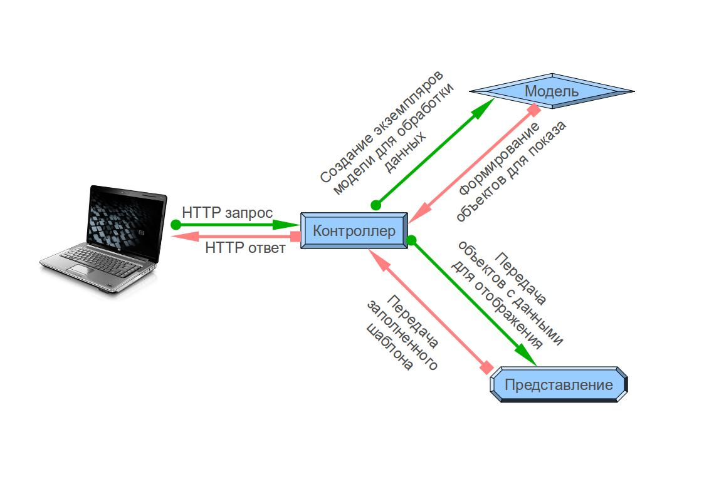
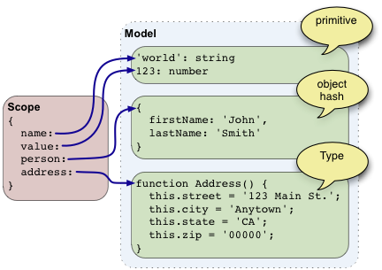
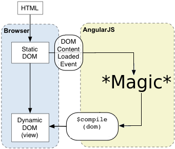
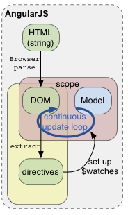
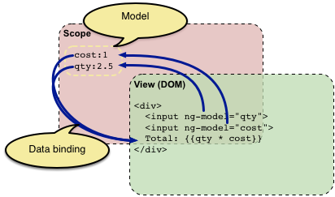

Введение в AngularJS
Вспомним MVC

MVC в AngularJS
Контроллер
- Объекты и функции на javascript
- Именуются всегда "controllernameCtrl"
- Отвечают за логику поведения компонент
- Работают только с данными из модели ($scope)
Модель
- Содержит конкретные данные для представления
- Видна через ссылку ($scope)
- Изменения в модели отображаются в представлении
Представление
Для программиста - это HTML (в большинстве случаев)
НО!
AngularJS работает с DOM (за это мы его и любим)
Общая концепция
Отображение в браузере
Перед отображением происходит перехват DOM, он модифицируется ангуляром, в соответствии с моделью, и, модифицированный, передаётся браузеру.
Отображение в браузере

AngularJS ищет директивы, которые, в свою очередь, определяют отслеживаемые элементы в модели.
Результатом является постоянно обновляемое представление, которое не нуждается в повторной генерации на основе измененных данных.
Модель ($scope) становится единственным достоверным источником данных для представления.
Модель ($scope) становится единственным достоверным источником данных для представления.
Демонстрация
Исходный код
<!doctype html>
<html>
<head>
<script src="http://code.angularjs.org/1.1.4/angular.min.js"></script>
</head>
<body>
<div ng-app ng-init="qty=1;cost=2">
<b>Счёт:</b>
<div style="text-align: left; display: block; margin-right: auto;">
Количество: <input type="number" min="0" ng-model="qty"> <br/>
Стоимость: <input type="number" min="0" ng-model="cost">
</div>
<div>
<b>Итого:</b> {{qty * cost}} руб.
</div>
</div>
</body>
</html>Демо
Примечание: Cлайд интерактивный. Можно в него потыкать. Здесь исполняется код предыдущего слайда
Счёт:
Количество:
Стоимость:
Стоимость:
Итого: {{qty * cost}} руб.

Итог
- С помощью HTML и дирректив пишется как отоображать данные из $scope
- В контроллерах пишется как обрабатывать данные из $scope
Основные понятия AngularJS
- Инжектор
- Модули
- Шаблоны
- Директивы
- Фильтры
- Сервисы
Инжектор
Инжектор — это надстройщик всех сервисов. Для каждого Angular-приложения существует один и только один инжектор.
Инжектор позволяет находить экземпляры объектов по их именам. Инжектор поддерживает внутри себя кэш объектов, таким образом несколько вызовов поиска какого-либо объекта вернут один и тот же экземпляр.
Если инжектор ничего не находит, он просит фабрику создать новый экземпляр.
Модули
Пишется логика Angular-приложенияОпределяются зависимостиНастраивается инжектор
Чем-то похожи на pacage в java
Пример модулей
angular.module('first', []).value('myval', 123);
//Второй модуль зависит от первого
var app = angular.module('second', ['first']);
app.controller('myCtrl', function($scope, myval) {
$scope.valInScope = myval;
});
<div ng-app="second"> //загрузка модуля
<script type="text/javascript" src=" ... </script>
<h2>Value is {{valInScope}}</h2> // Value is 123
</div>Шаблоны
Шаблон Angular является декларативной спецификацией, которая, наряду с информацией из модели и контроллером, влияет на то, что пользователь видит в браузере.
Это статичный DOM, содержащий HTML, CSS, и специальные элементы и атрибуты Angular.
Элементы и атрибуты заставляют Angular добавить поведение и преобразовать DOM-шаблон в динамический DOM.
Элеметы используемые в шаблонах
- Директива
- Разметка
(двойные фигурные скобки {{ }} для связи выражений, встраиваемых Angular'ом в разметку элементов) - Фильтр
- Теги HTML
Директивы
Директивы — это изменение поведения или преобразование модели DOM, связанное с пользовательским атрибутом, именем элемента, или css классом. Директивы позволяют расширять HTML синтаксис, в декларативной форме. Ниже приведен пример связывания данных для директивы contenteditable.
Во всех примерах всё что начинается с ng-* - это директивы
Пример директив
Использование
<my-directive-element ng-show="1==1"></my-directive-element>
//<my-directive-element ng-show="1==1" /> - так работать не будет
Собственные директивы
app.directive('myDirectiveElement', function() {
return {
restrict: 'E',
templateUrl: 'templateElement.html'
};
});
<h4>Список покупок</h4>
<ul>
<li ng-repeat="i in [1,2,3,4,5,6]">
<strong>Пиво</strong>
</li>
</ul>Полученный HTML
<h4>Список покупок</h4>
<ul>
<li>
<strong>Пиво</strong>
<strong>Пиво</strong>
<strong>Пиво</strong>
<strong>Пиво</strong>
<strong>Пиво</strong>
<strong>Пиво</strong>
</li>
</ul>Фильтры
Фильтры преобразуют данные. Обычно они используются в связке с текущей локалью пользователя, чтобы форматировать данные в специфичный для данной локализации формат.
Фильтры близки по духу к конвейерам в UNIX и используют тот же синтаксис | (вертикальная черта)
Пример фильтра
<!doctype html>
<html ng-app>
<head>
<script src="http://code.angularjs.org/1.1.4/angular.min.js"></script>
</head>
<body>
<div ng-init="list = ['Chrome', 'Safari', 'Firefox', 'IE'] ">
фильтрация массива
<input ng-model="predicate"> <br>
{{ list | filter:predicate | json }}
</div>
</body>
</html>Примечание: Здесь тоже можно поиграться
Сервисы
Сервисы Angular это одиночки (singletons — классы, у которых есть только один экземпляр), которые выполняют конкретные задачи, общие для веб-приложений.
Например, $http сервис предоставяет низкоуровневый доступ к браузерному объекту XMLHttpRequest.
Пример сервиса
angular.
module('myServiceModule', []).
controller('MyController', ['$scope','notify', function ($scope, notify) {
$scope.callNotify = function(msg) {
notify(msg);
};
}]).
factory('notify', ['$window', function(win) {
var msgs = [];
return function(msg) {
msgs.push(msg);
if (msgs.length == 3) {
win.alert(msgs.join("\n"));
msgs = [];
}
};
}]);Пример сервиса
<!doctype html>
<html ng-app="myServiceModule">
<head>
<script src="http://code.angularjs.org/1.1.4/angular.min.js"></script>
<script src="/app/services.js"></script>
</head>
<body>
<div id="simple" ng-controller="MyController">
<p>Попробуйте сервис сами!</p>
<input ng-init="message='test'" ng-model="message" >
<button ng-click="callNotify(message);">NOTIFY</button>
<p>(после 3х кликов вылетит сообщенка)</p>
</div>
</body>
</html>Пример сервиса
Попробуйте сервис сами!
(после 3х кликов вылетит сообщенка)
Подробнее о
После загрузки скрипта angular.js и построения DOM

- Angular ищет ng-app директиву, определяющая область действия фреймворка
- Этот модуль используется для настройки $injector
- $injector используется для создания сервиса $compile и $scope
- Сервис $compile используется для компиляции DOM и связки его с $scope
- Присваиваются значения World свойству name в области видимости ($scope)
Компилятор
Компилятор — это angular-сервис, который сканирует DOM в поисках специальных атрибутов.Процесс компиляции делится на две фазы:
- Компиляция: просмотр DOM и подготовка всех директив. Результатом этой фазы является функция линковки.
- Связывание: слияние директив и их областей видимости для получения динамического вида. Любые изменения модели в области видимости моментально отображаются в представлении, а любые взаимодействия пользователя с представлением обновляют модель.
Внедрение зависимости
// Вы пишете функции типа этой.
function doSomething(serviceA, serviceB) {
// тут какие-то действия.
}
// *** дедовский способ ***
var serviceA = $injector.get('serviceA');
var serviceB = $injector.get('serviceB');
// теперь можно вызывать функцию
doSomething(serviceA, serviceB);
// *** стильный, модный, молодёжный способ ***
// $injector сам передаст необходимые аргументы функции
$injector.invoke(doSomething);
//Именно так фреймворк вызывает ваши функции
Что дальше?
- Туториал с учебным приложением "Каталог телефонов"
(на русском) - Видео лекции. Изучай AngularJS в браузере
- Yeoman генератор каркаса приложения